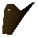

Lord Iban

| Config name | iban |
| NPC id | 1003 |
| Combat level | hidden |
| Hitpoints | 87 |
| Attack / Strength / Defence | 76 / 78 / 77 |
| Respawn | 100 ticks |
| Wander range | does not move |
| Movement | nomove |
| Defined in | scripts/quests/quest_upass/configs/upass.npc |
Lord Iban
The great and dreadful Lord Iban
Show all 1 spawn on the world map → Open in knowledge graph →
Drops
No drops recorded.
Locations
| Area | Coordinates | Level | Count | Map |
|---|---|---|---|---|
| unlabelled | 2133, 4647 | 1 | 1 | view |
Quests
Referenced in scripts
scripts/music/scripts/musicplayer.rs2scripts/quests/quest_upass/scripts/lord_iban.rs2scripts/quests/quest_upass/scripts/quest_upass.rs2